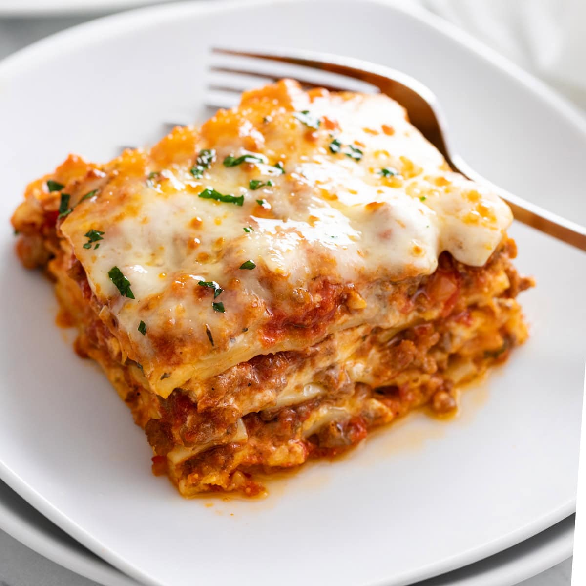

Lasgna

Description
Lasagna is a popular Italian dish made by layering wide pasta sheets with a rich filling, such as seasoned meat, tomato sauce, creamy béchamel or ricotta cheese, and shredded mozzarella. The layers are baked until the cheese is melted and golden, creating a flavorful and satisfying meal. Lasagna is often served at family gatherings and special occasions because it is both hearty and easy to prepare in advance. Its delicious combination of textures and flavors has made it a favorite around the world.
Ingredients
- 4 lasagna noodles
- 200g ground beef (or vegetables for a vegetarian version)
- 1 cup tomato sauce
- ½ cup ricotta cheese (or cottage cheese)
- 1 cup shredded mozzarella cheese
- 2 tablespoons grated Parmesan cheese
- 1 teaspoon Italian seasoning
- Salt and black pepper to taste
- 1 teaspoon olive oil
Steps
- Cook the lasagna noodles according to the package directions and drain.
- Heat the olive oil in a pan and cook the ground beef until browned. Season with salt, pepper, and Italian seasoning, then stir in the tomato sauce.
- In a small baking dish, spread a little sauce on the bottom.
- Layer noodles, meat sauce, ricotta, and mozzarella. Repeat until the ingredients are used.
- Sprinkle Parmesan cheese on top
- Bake at 190°C for 25-30 minutes, until the cheese is melted and bubbly.
- Let it rest for 5-10 minutes before serving.
Home